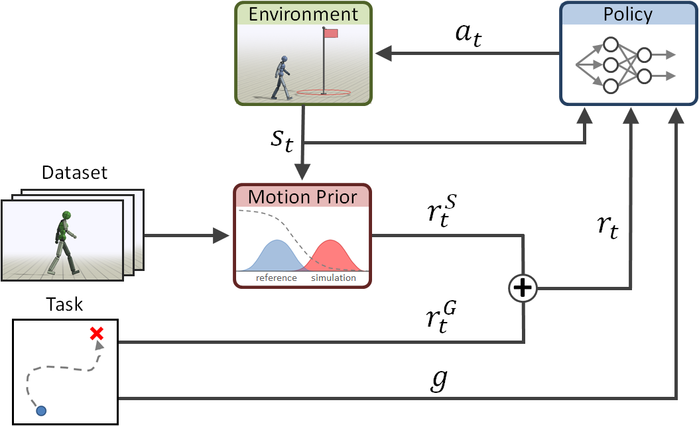

对抗运动先验 Adversarial Motion Priors¶
本节介绍机器人强化学习算法PPO以及AMP。
PPO¶
强化学习理论细节这里就不赘述了，好的教材有很多，请移步其他教材进行理论学习：动手学强化学习。这里我们复习一下PPO公式。
设策略网络为 \(\pi_\theta(a_t|s_t)\)，价值函数为 \(V_\phi(s_t)\)，其中 \(s_t\) 为策略观测，\(a_t\) 为策略动作，\(\theta\) 与 \(\phi\) 分别表示策略网络与价值网络参数。训练过程中，策略在环境中采样轨迹并获得即时奖励，随后基于 PPO 进行更新。与标准 PPO 不同的是，我们的即时奖励由环境任务奖励和 AMP 奖励共同构成，因此策略更新同时受到任务目标与运动先验约束。
设时刻 \(t\) 的混合奖励为 \(r_t\)，则时序差分残差可表示为：
其中，\(\gamma\) 为折扣因子，\(d_t\) 表示终止标志。基于广义优势估计（Generalized Advantage Estimation, GAE），优势函数递推为：
其中，\(\lambda\) 为 GAE 参数。进一步可得回报：
并对优势进行标准化：
设当前策略与旧策略的概率比为：
则 PPO 的裁剪策略目标写为：
其中，\(\epsilon\) 为裁剪系数。价值函数损失为：
其中，\(V_\phi^{\mathrm{clip}}(s_t)\) 表示裁剪后的价值估计。此外，为保持策略探索能力，在总损失中加入熵正则项 \(H(\pi_\theta)\)。因此，PPO 部分的优化目标可写为：
其中，\(c_v\) 和 \(c_e\) 分别为价值损失权重和熵正则权重。
AMP¶
AMP（Adversarial Motion Priors）对抗运动先验，本质上是在强化学习过程中引入了风格奖励。即图中的\(r_t^S\)，它衡量了仿真环境中的机器人状态\(S_t\)与数据集中的动作的区别。将风格奖励引入总奖励中，通过提升\(r_t^S\)奖励值来让机器人运动风格逼近数据集。风格区别使用判别器（Discriminator）来衡量，判别器是一个神经网络，用神经网络来衡量两个数据分布之间的差异。下面讲解AMP各个部分公式。

AMP 观测与判别器输入¶
AMP 不直接对完整策略状态进行判别，而是在专门构造的运动观测空间中学习运动先验。我们定义时刻 \(t\) 的 AMP 观测为：
其中，\(q_t\) 为关节位置，\(\dot{q}_t\) 为关节速度，\(v_t^{\mathrm{body}}\) 为机体坐标系下的躯干线速度。为了显式建模短时运动连续性，我们采用相邻两帧 AMP 观测拼接后的状态转移对作为判别器输入，即：
设判别器为 \(D_\psi(x_t^{\mathrm{amp}})\)，其中 \(\psi\) 为判别器参数，则其输出为：
该输出反映当前运动片段与参考运动分布的一致程度。
AMP 奖励构造¶
我们将判别器输出映射为 AMP 奖励，以引导策略生成更接近专家分布的运动。AMP 奖励定义为：
其中，\(w_{\mathrm{amp}}\) 为 AMP 奖励系数。当判别器输出接近 1 时，说明当前运动片段更接近专家运动分布，对应奖励更大；当输出偏离 1 时，奖励按二次形式衰减，并通过截断函数限制为非负值。
设环境原始任务奖励为 \(r_{\mathrm{task},t}\)，则最终用于 PPO 更新的混合奖励写为：
其中，\(\alpha\) 为任务奖励插值系数。该混合方式使策略在优化过程中同时满足任务完成要求和运动风格约束。
判别器监督损失¶
设专家样本为：
策略样本为：
我们采用均方误差形式训练判别器，使其对专家样本输出接近 \(+1\)，对策略样本输出接近 \(-1\)。对应损失分别为：
因此，判别器基础损失为：
通过该损失，判别器不断拉开专家运动与策略运动之间的输出间隔；而策略则通过最大化 AMP 奖励，促使自身生成的运动片段向专家分布靠近。
梯度惩罚与输入归一化¶
为提高对抗训练的稳定性，我们在判别器训练中加入梯度惩罚项。设专家输入为：
则梯度惩罚定义为：
其中，\(\lambda_{\mathrm{gp}}\) 为梯度惩罚系数。该项能够抑制判别器对输入的过度敏感性，从而减小训练震荡。
此外，为消除不同量纲状态变量对判别器训练的影响，我们对 AMP 输入进行归一化处理。设原始输入为 \(x\)，归一化后输入为 \(\hat{x}\)，则有：
其中，\(\mu\) 和 \(\sigma^2\) 分别为运行均值和方差，\(\epsilon\) 为数值稳定项，\(c\) 为截断阈值。专家样本与策略样本共享同一归一化器，以保证判别过程在统一尺度下进行。
联合优化目标¶
综合上述各项，我们训练过程的整体优化目标可写为：
即：
其中，PPO 部分负责优化任务表现，AMP 部分负责提供运动风格约束，梯度惩罚项则用于稳定判别器训练。通过这一联合优化过程，策略能够在完成速度跟踪等控制任务的同时，学习更加自然、平滑且接近专家分布的运动行为。
仿真训练结果¶
训练代码开源于：MOS9-AMP。
最终实现机器人全向行走结果如下，虽然横移看起来可能不是很自然，但数据retarget结果就是这样的，并且横移实际上只用了2条数据。
参考文献¶
[1] Peng, X. B., Ma, Z., Abbeel, P., Levine, S., & Kanazawa, A. (2021). Amp: Adversarial motion priors for stylized physics-based character control. ACM Transactions on Graphics (ToG), 40(4), 1-20.